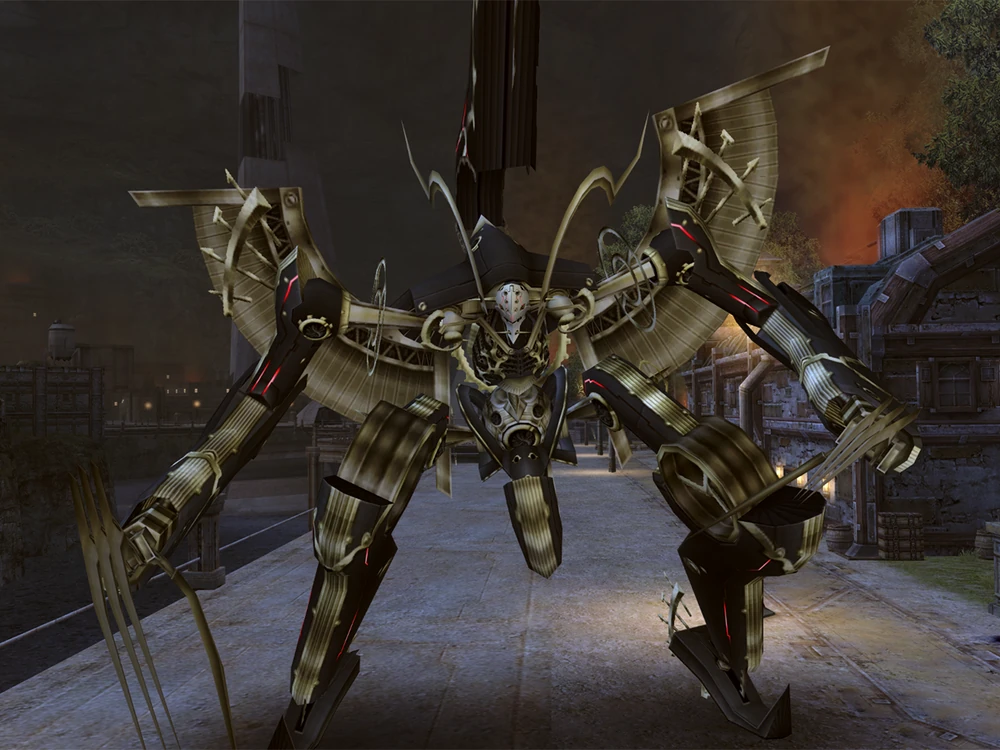

Prologue
The struggle between Mechonis and Bionis, two gods engaged in an eternal battle, opens this Xenoblade Chronicles tale. They keep fighting until Bionis amputates the Mechonis' left hand, at which point their swords simultaneously puncture each other. Life grew on top of these gods eons later, but Mechonis' Homs and Mechonis' Mechon, and their offspring, would carry on the conflict between the Mechonis and Bionis.
A Mechon attack is being repelled by the Homs army in Sword Valley centuries later. Due to their rapid loss of territory, the Homs must withdraw to Colony 6, where they will make a final stand. The current owner of the fabled Monado, Dunban, chooses to defy orders and fight alongside Dickson and Mumkhar against the Mechon army. Mumkhar flees and intends to come back to retrieve the Monado after Dickson and Dunban have perished, but he is slain by the Mechon after crashing into their base. The Homs triumph and Dunban is crowned "Hero of the Homs" after he and Dickson successfully drive back and eliminate all of the Mechon with the Monado, the only weapon capable of penetrating Mechon armor. Sadly, Dunban is unable to completely control the Monado, and following the conflict, he is bedridden for a year due to irreversible injury to his right arm.
Chapter 1
A year later, Shulk, an 18-year-old weapons developer, is attacked by a Krabble while searching among Mechon scraps at the Mechon Wreckage Site for resources that could be helpful to Colony 9. He is saved by his close friend Reyn, and the two go back to Colony 9.
Since his break is over and "Square-Tache" (Vangarre, the colonel of the Colony 9 Defence Force) would not be happy if he was late, Reyn returns to the Defence Force. Dickson, who has recently returned from a trip away, is waiting for Shulk when he comes to the Weapon Development Lab. Dickson instructs Shulk to go outside for some fresh air after they had been discussing the Monado's capabilities. After agreeing, Shulk goes to Outlook Park.
In the meantime, Fiora provides meals for Dunban, her older brother. Although Dunban can barely eat himself, he is adamant that he must pick up the Monado once more in the event of another Mechon attack, much to Fiora's dismay. Dickson then stops Fiora as she is about to bring food for Shulk to the lab, telling her that Shulk is not there. Fiora walks to Outlook Park after thanking him.
Fiora discovers Shulk perched on a park bench, gazing down at the land and lake. After she serves him a sandwich and they converse for a bit, they are forced to return to the colony by falling debris. This is because Outlook Park is not covered by the Anti-Air Batteries, which demolish the wreckage.
When they get back to the lab, they see Reyn as he curiously takes up the Monado. Activating, the blade swings violently and unpredictably throughout the room, bisecting one machine and scouring many others before striking Fiora straight. Nevertheless, the Monado deactivates rather than harms Homs because it is unable to harm her. When Shulk worries more about injury to the Monado than possible danger to Fiora, Fiora is startled and upset, but Shulk dismisses this. According to Reyn, he came to the lab to find Shulk and ask him to accompany him to the Mag Mell Ruins in order to get ether cylinders for Colony 9's sole mobile artillery weapon. It had collided with a row of Residential District homes, causing all of the Ether to spill out. Following Shulk's approval, the two depart for Tephra Cave.
They are met at the entrance by Fiora, who smiles and flings ether canisters at them. The two, embarrassed, let Fiora accompany them as they struggle through Tephra Cave. When the three reach the Mag Mell Ruins, they have a quick conversation before moving on. The three proceed to the Cylinder Hangar after emerging into a stunning plain with a view of Colony 9.
Two odd machines that are not Mechon assault the three of them after Reyn has gathered the ether. A siren sounds after they are vanquished. When they see a swarm of Mechon approaching Colony 9, the three dash outside.
Chapter 2
When a Faced Mechon hits the Anti-Air Batteries, one of them is instantly destroyed. To assist, Shulk, Reyn, and Fiora return to Colony 9. Dunban is seen gripping his right arm in agony as he hobbles out of bed.
A Mechon attacks the three at the Main Entrance. As Shulk and Reyn fight the enemy, Fiora dashes inside her house to see how Dunban is doing. Fiora informs them that she is unable to locate Dunban after they have disabled it. Knowing that he might have gone to the Monado, Shulk and Reyn and Fiora dash to the lab just in time to see the Defense Force's futile attempts to repel the invasion and their defeat. Vangarre orders his fleeing soldiers to keep fighting, but a fresh Mechon shows up. The Mechon's visage disturbs him, so he laughs uncomfortably at it before firing his rifle. Metal Face throws a car at him, blocking the lab's entrance, and the weapon causes little harm. Reyn vows revenge on the Mechon for the murders of his comrades. Remembering the Residential District's Mobile Artillery unit, they rush to refuel it in hopes of using it to blow apart the debris so they may enter the facility.
However, a sizable contingent of Mechon cuts them off at the intersection. While he and Reyn divert the Mechon's attention, Shulk instructs Fiora to run ahead and refuel the guns. Initially refusing, Fiora eventually gives in and flees. Following a brief conflict, the aerial ornament collapses, obstructing the brief path to Fiora's location. Dunban jumps in to help them, Monado in hand, after Shulk makes a fruitless attempt to save his comrade after Reyn is attacked from behind and nearly devoured by a Mechon. After he dispatches all of the adversaries with ease, the three depart in pursuit of Fiora.

Dunban is struck by a sharp surge of pain as they arrive at the Main Entrance and collapses to the ground. Halfway across the bridge, the Monado stops and falls a few feet ahead of him. Despite Reyn and Shulk's objections, he reaches for it before collapsing after coughing up blood. Shulk dashes forward to seize the Monado as a troop of Mechon march toward them from the opposite side. He has a vision of a Mechon's laser striking him after it lights in his hands. Seeing the blow coming, he avoids it and easily beats every Mechon. The other two men rise, and with the help of Shulk's newfound ability to see into the future and use the Monado painlessly, the three of them vanquish the remaining Mechon.
When they finally see the Metal Faced Mechon, they pause their hasty journey to the Residential District. It quickly defeats them and knocks the three prone because not even the Monado can harm it. Fiora, who is in charge of the mobile artillery unit, blasts Metal Face in the back just as it is ready to deliver the final blow. Shulk yells for her to flee after having a startling vision of her being killed. She keeps attacking, nevertheless, and won't listen. Metal Face cuts off one of the machine's arms, but Fiora keeps shooting Metal Face point blank, eventually causing damage to its face but not its death. The blast's impact knocks the mobile artillery backwards, allowing Metal Face to pick it up off the ground, swing it into a building, and then use its claws to skewer Fiora, killing her.
Enraged, Shulk yells and charges toward the Mechon, blinded by his rage. After the other Mechon start to flee, it beats them once more and takes off, leaving the three to cope with Fiora's loss.
The following day, Shulk sits in Outlook Park once more, thinking while staring out over Colony 9. When Reyn joins him, they talk about the attack. Dunban told Shulk that he wouldn't cry and instructed him to "treasure the gift of life that Fiora has given [him]". Reyn accepts when Shulk informs him that he wants to go after Metal Face and destroy it, even though he had assumed that Shulk would try to dissuade him. Since Colony 6 is the only remaining colony and might have more knowledge on the Mechon, they decide to go there. From his window, Dunban observes the two as they go about their business, resolving to join them as soon as his arm recovers. Dickson smirks as he observes from a nearby wall.
Chapter 3
A fourteen-year-old flashback is displayed; Shulk participated in an expedition with his parents and four other Homs when he was younger. They came at what seemed like a tower while traveling through a snowy area. The entire tower glowed blue as they stepped inside. Dickson soon discovered that all of the Homs had died, with the exception of Shulk, who was dozing off beneath a stand that contained the Monado. Dickson returned to Colony 9 with both.
As Shulk and Reyn enter Tephra Cave in the present, they find that a previously closed door in the Mag Mell Ruins is suddenly open. They enter in and quickly discover a few dead travelers from Colony 6, whom they assume were traders. Reyn remarks on how powerful the creatures must be to have slain them, and Shulk and Reyn return them to Bionis by submerging their bodies in a nearby pool of water.
Taking turns keeping an eye out for adversaries, the two decide to take a break. Shulk experiences a bizarre dream and another future vision while he is asleep. In the dream, Shulk is speaking to a silhouetted figure who informs him that everyone desires to alter the future and that the Monado can assist him in doing so. However, if Shulk discovers the "True Monado," he will have complete control over the future. Reyn is seen in the vision fleeing from a pack of Arachno and then entering a wide, webbed area. He is killed when a huge Arachno stabs him in the chest. Although Shulk chooses not to tell Reyn, he proceeds with greater caution out of concern for his friend. But a sticky white material catches Reyn and drags him into the cave above. Shulk discovers Reyn yelling for assistance as the spiders encircle him during a desperate run through the cave.
Reyn raises his shield to protect himself as the Arachno Queen descends from above, and Shulk's vision is ready to materialize. After the Monado lights, Shulk saves Reyn's life by using Shield, the first new Monado Art. The Arachno Queen and her minions are vanquished following a fierce struggle. When the two emerge from the tunnel and reach Kneecap Hill, they are greeted by the breathtaking view of Mechonis rising in the distance amid miles of water. They are unaware that a flying Mechon is spying on them and reporting to a Face Mechon that is silhouetted.
Chapter 4
As they enter Gaur Plain and get to Bionis' Leg, the two notice smoke billowing from next to a pool of water. When they get there, they discover a broken buggy, which baffles Shulk because it appears to be pretty new and nobody would just leave it. After touching the buggy, Shulk sees a vision of a young boy being pursued by some enormous monsters next to a tiny lake.
After searching the area, Shulk and Reyn discover two huge creatures attacking a boy. After Shulk tells him to run, he and Reyn fight and prevail. The boy introduces himself as Juju. Juju informs Shulk and Reyn about their camp and offers them a place to stay as a "thank-you" for saving him after they introduce themselves. The three of them proceed to the camp after Shulk fixes the buggy and gives them directions.
Sharla, his older sister and a qualified medic, accompanies Shulk, Reyn, and Juju when they arrive at the camp. She chastises Juju for attempting to go back to Colony 6 by himself before giving him a worried hug. Juju presents Sharla to Reyn and Shulk after they have parted ways, and she gives them her name. Then, because her fiancé, Gadolt, is wearing the uniform of the Defence Force, Sharla snatches Reyn and demands to know what happened to him. Reyn shoos her away, claiming he doesn't know who she's referring to; Shulk clarifies that they're from Colony 9, not 6. Sharla then accepts Juju's offer to let them relax for a bit.
Shulk and Reyn travel to speak with Sharla after exploring the camp. She informs them that the only people still living in Colony 6 are their small group, which consists of Homs and Nopon. She is surprised to learn that the Mechon had attacked Colony 9 lately. Sharla explains to them that she is the head of the little group in the camp and that she is a physician in the Defence Force in Colony 6. Gadolt, a Defence Force soldier, and her colonel, Otharon, remain in Colony 6.
When Juju learns that Reyn and Shulk are on their way to Colony 6, he begs them to bring him along. Sharla chastises him for his carelessness and gives him a slap. They are all too afraid to face the Mechon, he yells at Sharla, and if no one else will, he will. Reyn chastises him for treating Sharla disrespectfully and advises him to pay attention to her advice. Sharla points out that Reyn's behavior when he calls Juju a "kid" is very similar to Gadolt's. After complaining that he will prepare dinner, Juju leaves the gathering. The three continue to converse before hearing the buggy drive away.
When the three of them dash outdoors, they find Juju and the buggy gone. Juju and Sharla are killed by a gigantic Mechon in a vision that Shulk sees. When Reyn sees this, she informs Sharla that Shulk has the ability to look into the future. Sharla joins the two in their search for Juju despite her refusal to believe it. According to Sharla, he would have probably gone in the direction of Raguel Bridge because it is the safest buggy route to Colony 6.
Juju is next shown in the scene, furious, having smashed his buggy at the beginning of Raguel Bridge. He promises to "show them all" as he makes his way on foot towards Colony 6. After finding the wrecked buggy, Sharla, Reyn, and Shulk soon reach Spiral Valley. Juju is present, but he is grabbed by a Mechon M71, a Mechon with several tentacles. In an attempt to help him, Sharla rushes towards him, but Shulk recalls that this is where Sharla passes away in his vision.
As Shulk surrounds Sharla with an aura that gives her remarkable speed to avoid the tentacles rising from the ground, a new sign appears on the Monado. The Mechon retreats to the valley's roof following a half-fight. The three ascend and complete the fight. The four of them exhale in relief as Juju is saved, but Shulk reports that he saw a different Mechon in his vision.
As expected, a second Mechon with a face quickly emerges above them; this one is rounder and bulkier than Metal Face. When Shulk and Reyn discover that Mechon can talk, they are taken aback, especially as it denigrates them with its voice. It is much stronger than them and quickly overcomes them, seeking to murder until its body lights turn green and it absorbs Juju and flees to Colony 6.
Chapter 5
Four hours later, Sharla wakes up at the Refugee Camp from a nightmare of Juju's death, having fainted from stress. Reyn tells Sharla that she will get her brother back with Shulk's and his assistance. Shulk, Reyn, and Sharla enter Colony 6 at the top floor of Bionis' Leg with determination. Sharla notes that it would be very risky to enter the colony through the front gate alone because it is most likely closely guarded by Mechon warriors. She goes on to say that since they are connected and there is an ether mine beneath the colony, their best chance would be to pass through the mines.
After exploring the Ether Mine, the three see Otharon, who informs them that Mechon took the captured Homs to the Central Pit and that Gadolt vanished during a botched surprise attack, leaving only his rifle behind. Otharon is shown by a vision from Shulk firing at the Faced Mechon in a Mobile Artillery and then plummeting into a pool of ether. Convinced that Otharon won't believe him, Shulk abruptly changes his mind after attempting to warn him. Otharon impatiently departs from the group to continue.
They are surrounded by Mechon when they reach the bottom of the mine, and their leader—the same Faced Mechon who captured Juju—identifies himself as Xord. Sharla insists on knowing the whereabouts of Juju and the others. Xord responds, "Juju? "He's right here, if you mean the brat!" pointing to a force field shaped like a diamond that contained an unconscious Juju. "As for the others, well, I simply couldn't resist! I devoured them all. Otharon enters the room covertly and hears everything of Xord's words.
Shulk, Reyn, and Sharla battle Xord out of wrath, but Xord's strength is too great. After infiltrating a Mobile Artillery Unit, Otharon engages Xord in combat. But Shulk soon comes up with a strategy to save Otharon after realizing that this is where he is supposed to die. In order to cause Xord to disintegrate, Otharon starts pushing him into the ether river below. Otharon pushes Xord enough to fall in as a tribute to Gadolt, but the unit also starts to fall in. Shulk successfully maneuvers a mobile crane, which he uses to seize Otharon's vehicle. However, an explosion in the unit sends Otharon flying. When Reyn sprints up the crane and snatches Otharon in midair, Shulk believes he has failed, but Reyn then runs up the crane and grabs Otharon in mid-air, saving his life
Otharon acknowledges Shulk's skills and expresses gratitude while apologizing for his actions. Next, he hands Sharla Gadolt's rifle to her. The party starts to return to the Refugee Camp with Juju in hand, but as they climb up the elevator, a badly damaged Xord resurfaces and assaults them. He is easily defeated because the ether has corroded his armor. He states shortly before he passes away that Shulk has not yet discovered the Monado's full potential. Xord falls down the elevator shaft and blows up as Shulk asks what he means.
When they reach the Bionis' waist outside, the gang is abruptly met by Metal Face who is now speaking and multiple other Faced Mechon that look exactly like Xord. Shulk is attacked by the group when Metal Face makes fun of Fiora's passing, but there are too many Mechon. Arriving as reinforcements, Dickson and Dunban—who is now healthy enough to fight with his uninjured hand—are nevertheless outclassed by the Mechon.
Dickson recognizes a flying monster known as a Telethia, and it attacks the Mechon, killing most of them and wounding Metal Face. Metal Face's armor is dented when Shulk uses the Monado to strike it. Meanwhile, Shulk gets a vision where he defeats Metal Face with ease. The Telethia flees with the Mechon, landing on a hillside next to an unidentified Homs who inquires about Shulk and receives positive information. After Shulk shares his vision with the group, Dickson explains that it is set on Prison Island, near the head of the Bionis, where the supposedly legendary High Entia are believed to reside. Next on the group's agenda is that location.
Chapter 6
Shulk, Reyn, Dunban, Otharon, Sharla, Juju, and Dickson travel through Satorl Marsh, a murky but lovely area near the Bionis' waist, on their way to Prison Island. They camp when they reach a little post, but Shulk is too preoccupied by his vision and Fiora's passing to sleep. Eventually, Dickson comforts him.
The group reaches the edge of the marsh in the morning, but before they may cross, they must defeat the Satorl Guardian and gather specific ingredients for a Nopon. Dickson then departs to resume his journey, while Otharon and Juju depart to rebuild Colony 6. Dickson murmurs something about misleading the group as they depart. When they depart, Dunban tells Shulk to keep the Monado when he requests for permission to use it. Makna Forest is the next destination the group visits. A Faced Mechon, whom is called Meyneth, is being worked on by an unknown silhouetted woman far away on Mechonis.
Chapter 7
A young girl and four soldiers—who seem to be her servants—fight a giant Telethia deep within Makna Forest. Following the deaths of the soldiers, the girl loses a significant amount of her ether and passes out. Shulk discovers that she is present in his vision of overcoming Metal Face after the group discovers her unconscious and ether-deficient. In addition, he sees her fighting a gigantic Telethia. She is taken to a refuge by the gang, where Sharla diagnoses her illness and determines she need Water Ether Crystals, which are located close to waterfalls. Shulk chooses to go to Makna Forest by himself after Dunban mentions the waterfall at the entrance.
When Shulk gets to the waterfall, the man who was seen speaking to the Telethia—who also showed up in Shulk's dream in Tephra Cave—confronts him. The individual identifies himself as Alvis, a Homs, and claims that Shulk is "famous among all Homs." Suddenly four little Telethia attack them. Shulk attempts to use visions to defeat them, but the Telethia are aware of his strategies and knock him down twice. Alvis informs Shulk that Telethia has the ability to read minds, negating the significance of Shulk's visions. Purging this ability is the only method to vanquish them; to Shulk's surprise, Alvis picks up the Monado, unlocks the symbol, and kills one of the Telethia himself. Alvis claims that the true issue is relaxing after being "wounded by a girl," as Shulk and he destroy all the Telethia. He goes on to say that the Monado can control ether. Shulk questions how he can operate the Monado and how he knows so much about it.
Before Alvis responds, Reyn shows up in search of Shulk. Shulk discovers that Alvis has vanished as he turns around, leading Reyn to believe that Shulk is making everything up. Alvis is shown observing them depart from a distance. When Shulk and Reyn get back to the party, Sharla revives the girl by shooting ether into the air with the ether crystals. She slaps Shulk in return after he puts a consoling touch on her arm. She identifies herself as Melia but won't explain why she is alone herself in the jungle. She nevertheless chooses to give the gang back for saving her by guiding them over the Eryth Sea to the Bionis' head.
The group must go to Frontier Village, a city inside a big tree where Nopon reside, in order to get there. Melia is referred to as "Bird Lady" by the Nopon. Melia enters and requests permission from Chief Dunga, the Nopon monarch, to enter the Eryth Sea before departing solemnly. Shulk goes to speak with her, worried about her views.
When Shulk and Melia cross paths, she murmurs to herself about something that escaped from her homeland and needs to be destroyed. Recalling that Alvis mentioned the injured Telethia, Shulk brings up the subject with her and is right. In addition, he informs her about his visions, which she does not believe, and how he vanquished Telethia at the lake. She subsequently turns down the invitation from Shulk and the other members of the group to assist her in defeating the Telethia. Nevertheless, Dunga convinces her to accept, and as a bonus, he offers to send the village's "Heropon" (finest warrior), whom he is currently training, to help them.
Dunga presents Riki, the Heropon, to the group at the gathering spot. It is later revealed that the only reason Riki is the Heropon is because he will be released from a number of obligations he owes the town if he completes this quest, despite their initial disbelief (he knows very nothing about the "Dinobeast" and expects the party to fetch his equipment for him). The gang goes to Makna Forest first because he knows where the Telethia might be, near a sizable amount of ether crystals.
When the crew arrives at the location, they find it in ruins, as the Telethia has absorbed so much ether that the surrounding area is unstable. As Melia begins to think about the Monado's talents, they are abruptly attacked by the Telethia. They successfully weaken it, but in the midst of the struggle, they realize that the Telethia also possesses regeneration abilities. The gang is stunned by this revelation, and Melia nearly gives up, but Shulk restores her faith in herself, and she develops slight affections for him. Melia is able to assault the Telethia with so much energy that it implodes, completing her objective successfully.
As the group starts to bid goodbye to the pardoned Riki back in Frontier Village, Dunga has Riki join the group heading for Prison Island permanently. The group also learns that Riki is considerably older than they initially believed, with eleven children and a wife named Oka. Melia informs the group that in order to reach Prison Island, they will require imperial approval from the High Entian emperor while they prepare. Reyn feels uneasy in the bubble-shaped pod that transports them to the Eryth Sea.
Chapter 8
The group first sees Prison Island and the High Entian capital, Alcamoth, which they think to be technologically amazing, when they arrive at Eryth Sea. They take transporters—which Reyn finds uncomfortable—to the entrance of Alcamoth. To the surprise of the others, High Entia guards greet the group upon arrival and refer to Melia as "Lady." Telling the others to wait while she gets the help they require, Melia goes with the guards. However, when she departs, additional guards show up, take the party into custody, and lock them up in an opulent aerial chamber.
Melia meets with the Emperor and grants the group approval without being informed of their detention. Three disgruntled people—her stepmother Yumea, her masked servant Tyrea, and an advisor named Lorithia—are watching her as she makes her way there. It is revealed that Melia has an elder brother named Kallian and is truly the daughter of Sorean, the High Entia ruler. Sorean declares that she will be the next in line for the throne after she tells them that the Telethia has been killed. After that, she finds out that the gang has been arrested; Kallian tells her that a prophecy states that the High Entia would be destroyed by the sword wielded by the real heir to the Monado (Shulk). Melia claims that Shulk would never do that, but Sorean has already dispatched the Divine Seer, the High Entia's top advisor, to question them.
Only Shulk is still certain that Melia would never turn on them when they were arrested. They encounter Alvis, the Divine Seer. They are free to move about Alcamoth as they choose after Alvis declares them innocent. He leaves when Shulk tries to question him about the Monado. They resolve to assist the High Entia Guards with a rescue mission, but Riki, having nothing else to do, tries to go locate Melia.
Sorean and Kallian get ready for Melia's inauguration ceremony while the group is away. Yumea, Kallian's birth mother and Sorean's First Consort, proposes that the ceremony be held using the Trial of the Tomb, a custom that hasn't been performed in decades because it is deadly. Kallian objects, but Sorean and Melia agree because they see the prestige it would bring. Later on, Yumea plots with Tyrea because she has always detested Homs and thought they were dirty and worthless. She wants to cut them off from all interaction with the High Entia. Yumea gives Tyrea the command to kill Melia in the Tomb since she is of Homs ancestry (the Second Consort is always a Homs). While seeing this, Kallian does not hear what they have to say, but he does take note of Tyrea's mask.
After saving a High Entia worker and going back to their room, the group notices High Entia gathered outside. Sorean declares Melia, who is wearing a garment that completely covers her body with a ceremonial mask, the next successor to the throne from a balcony. The only party member who isn't shocked by this is Dunban. Melia must leave right now for the tomb's trial. Following the ceremony, Shulk sees a vision of Melia being slaughtered at an altar.
Five assassins that look like Tyrea confront the others after Shulk shares the vision with them. Having anticipated the attack, Alvis shows up there to assist, but he does so after the assassins have been vanquished. Soon after, Kallian arrives; according to Alvis, the assassins are members of the Bionite Order, a supposedly legendary terrorist organization that was exterminated for their extreme beliefs after having previously worked for the imperial family. Shulk describes his vision of Melia being assassinated, while Kallian remembers Yumea's encounter with Tyrea. Despite Reyn's protests, Kallian is unable to allow the group to enter the Tomb owing to High Entia law. However, Dunban circumvents this by claiming that they are exempt from this restriction because they are Homs. Alvis leads them to the tomb when Kallian gives in. Shulk inquires about the Monado once more at the entryway. Alvis discloses that he is descended from a long line of Divine Seers who possess the Monado and the capacity to see into the future. But unlike Shulk's unexpected visions, theirs occur through a "ritual"; according to Alvis, this indicates that Shulk is more powerful than the Seers. Alvis also observes that "The Bionis is stirring" just prior to their arrival at the Tomb.
Through a scan that determines her DNA, Melia enters the tomb. Reyn presses the same button when the group arrives at the same location and is likewise examined; however, because he is a Homs, he is considered an intruder, and a trap door opens, sending the group plummeting into a pool of water. With the mindset of her family's progenitor, Melia overcomes obstacles to get to a chamber with an artificial intelligence. He tells her that he feels "joy" because she is 80% Homs and that she will be the next empress, and probably the last, but that she is the High Entia's hope, as stated by Sorean and Kallian. Melia is perplexed by this. It seems that Melia's ancestors have been looking for a cure to a curse for a long time, and that the only thing that can free them from the curse is a particular gene sequence. Tyrea shows up and assaults Melia after the AI bestows a royal seal on her.
The group belittles Reyn for activating the button and survives their fall. They were fortunate, according to Alvis, because they can still get in touch with Melia, albeit indirectly. As they make their way through the tomb, they run into and battle a number of Orluga Rufus before arriving at Melia just as Tyrea assaults her and reveals that she is half Homs, which surprises Shulk. The gang must battle both as a massive Telethia materializes above them as they arrive. Tyrea's mask gets knocked off after the combat, and the Telethia absorbs too much ether. Alvis utilizes a different power to absorb the explosion, but Tyrea manages to get away while the party is in the blast radius. Shulk removes her mask, thanks Alvis and Melia for saving her, and holds a joyful Riki in her arms.
When Melia and Alvis visit her father and brother, they tell them about what happened in the tomb. The coronation of Melia is set for one year after Sorean's passing. While the group unwinds in their room, Dunban wonders why Melia, rather than Kallian, will succeed Kallian as ruler. As they consider it, Sorean calls for Shulk. Shulk responds to Sorean's question about why the group wants to defeat the Mechon. The gang is eventually given permission to attack the Mechon after Sorean informs Shulk that the Mechon invasion is lowering Bionis' ether levels and that the Monado is the sword that will save the people, per an old prophecy. When Shulk requests to visit Prison Island, Sorean explains that it is home to an old secret that not even the imperials fully understand and that no one is permitted there to prevent damaging the secret. Shulk grudgingly agrees. After that, Sorean makes one more request "as a father" to Shulk, which Shulk agrees to: to always be Melia's buddy. Sharla questions whether Melia is the formal princess they currently know or the weak girl they encountered in Makna Forest. Shulk answers, somewhat hesitantly, that she is both. Alvis and Lorithia talk about a plan in the interim.
Chapter 9
Alvis had presented Sorean with a futuristic vision a month prior. Like in Shulk's vision, the group fights the Faced Mechon on Prison Island, but Sorean dies in the process. Sorean acknowledges this, and Alvis says it will happen shortly.
Vanea encounters an unidentified person on Mechonis in the present day who gives the order to hit Prison Island. Metal Face and a few other Mass-Produced Faces immediately go there. Along the way, Metal Face begins to tease a tiny silver-faced Mechon, the same one Vanea was working on before. They run toward the Anti-Mechon aerial tanks of the High Entia and fight them.The group chooses to go to Melia's house because they want to see her. She has never been spotted with her head exposed before; the villa is the only location where she is permitted to display her wings, which are smaller than those of any other High Entia. Melia explains the imperial family's marital customs after the group has admired the villa's garden. Emperors are expected to have polygamy, with one High Entia (in this case, Yumea, Kallian's mother) and one Homs (Melia's mother, who passed away years before the game's events because of High Entia longevity.) It is then revealed that Melia is 88. Since some High Entia have expressed disapproval of the custom of marrying a Homs, Melia, who is part Homs, must completely cover herself while she is in public. The gang then enthusiastically accepts Melia's invitation to a feast. Shulk sees a vision that is similar to the one that Alvis showed Sorean in the most recent flashback, and it has the same conclusion, as she starts to get ready to depart. Shulk is appalled by this and tells Melia about it as the Mechon warning sirens start to wail. Sorean has already left as the party rushes to the audience room to stop him.
Sorean plans to build a large wall on Prison Island to defend Alcamoth and significantly degrade the invading Mechon. He must, however, compromise the secret kept on Prison Island in order to accomplish this. The barrier is constructed and functions flawlessly. A member of the long-thought-to-be-extinct Giants species welcomes Sorean as though he already knows him, revealing the secret as it is produced.
After defeating an ancient beast and unlocking the two seals needed to reach Prison Island, the group travels up to a huge gate on the island. Reyn and Riki notice that a statue they see seems like a Telethia, but it actually depicts an ancient High Entia. The group moves forward when Melia uses another genetic study to open the door. The Giant chooses to "let the shackles be released" after Shulk has another vision in which he is with him. When Shulk tries to tell the group, they interrupt him.
Sorean is with the Giant as the gang climbs to Prison Island's highest point. The Monado's inventor, Zanza, is revealed by the Giant to be himself. In order to harm Face Mechon, he asks Shulk whether he wants him to unlock the Monado. Despite Melia's reluctance, Shulk consents and releases the Giant. When Metal Face gets there, he kills Zanza by piercing the ether barrier with a spear. Metal Face goes on to describe how they break down matter using ether to facilitate killing. Sorean surprises Metal Face by using the island's Anti-Mechon Defence System to attack him with his staff. Sorean clutches Melia as Metal Face collapses to the ground, but his attack is insufficient; Metal Face gets back up and Sorean shoves Melia aside just before Metal Face stabs him. Face Nemesis begs him to stop as Zanza passes away, but he ignores her.
Zanza's words cause the Monado to alter and gain a great deal of strength, but Shulk is still upset because he was unable to stop Sorean's death. With all of his strength, Shulk leaps at Metal Face, but Face Nemesis blocks him. Face Nemesis's chest is sufficiently damaged to show that the Mechon has a Homs pilot. When the Homs take off her helmet, Fiora is shown to be alive but disinterested in conversing with them. Shulk is horrified to see Fiora go once more as Metal Face and Face Nemesis flee to prevent more harm from the Monado.
As he passes away, Sorean claims that Melia's current position as the empress of the High Entia was meant to be. Later on, we observe Alvis speaking openly to the ether where Zanza was murdered. He makes a passing reference to the way he may have "filled in" for Zanza.
Chapter 10
In the Audience Chamber, Kallian informs the ministers who have gathered that he will take over imperial responsibilities as regent until Melia takes the throne in a year. Lorithia suggests holding a roundtable to debate strategy with reference to the Mechon.
The others are informed about Fiora by Shulk and Reyn back at Whitewing Palace. Disturbed that Fiora did not recognize them, Shulk sets out to locate Dunban. Dunban informs him that although it is unnerving, he is glad she is still alive and that they need to help her remember.
Shulk asks for time to consider his plan after Kallian calls the group to inform them of his intention to create an allied army and wants them to propose it to the Homs and Nopon. When the group gets back to their accommodations, Melia tells Shulk to go look for Fiora, adding that she will stay to assist in putting the army together. As they are about to leave, Kallian stops them and begs Melia to accompany Shulk. He then introduces a woman who will take Melia's place while she is away. According to Kallian, the silver-faced Mechon escaped to Sword Valley's Galahad Fortress. Alvis informs them that in order to get to Sword Valley, they must descend Valak Mountain, and since he knows the mountain well, he will serve as their guide. They arrive at the entrance to Valak Mountain by a short-distance pod that leads them to Makna Forest.
Meyneth comments that Zanza is still alive while Face Nemesis is repaired in Galahad Fortress. Why did he risk removing the Monado's bindings, she wonders? She thinks she has to visit Shulk again after realizing she is feeling something for him. Metal Face recalls that she is Dunban's sister as he watches her go.
The group descends Valak Mountain, pausing at Ose Tower for a rest. According to Alvis, the Monado had been imprisoned there until the Homs discovered it. He and Shulk were able to glimpse into the future by touching the Monado, which has the power to alter the future by upsetting the ether that underpins their universe.
Fiora confronts them inside Face Nemesis as they continue to descend to the mountain's base. She still can't recall them, and she calls Shulk "Heir to the Monado" and says she wants to speak with him. Metal Face interrupts them by shooting Nemesis to render it inoperable and demanding the Monado in return for Fiora's life. His compliance causes Metal Face's chest to open, exposing Mumkhar as the pilot.
Mumkhar responds that he assaulted Colony 9 since it was Dunban's home when Dunban demands an explanation. Dunban rushes directly toward him, but Metal Face is controlled by Mumkhar's remote to point a claw at Fiora's neck, endangering her life. He then demands that they give up the Monado, which Shulk complies, and beg, but Melia uses an ether attack to blast Mumkhar and Metal Face, knocking Metal Face down and taking the Monado from Mumkhar's grasp, which Shulk immediately regains. Then Mumkhar lets go of his claws and fights the gang.
Midway through the battle, a volley of Mass-Produced Faces and a massive golden Mechon fall from the sky. The pilot identifies himself as Egil, the inventor of the Faced Mechon, the head of Mechonis, and a Meyneth agent, and claims that it is the strongest Mechon ever constructed. Egil dismisses Shulk's demand that he explain why he placed Homs in the Mechon and departs with Mumkhar and Fiora.
Chapter 11
Dickson welcomes the gang to Sword Valley with anti-Mechon weapons and informs them of the Homs, High Entia, and Nopon's alliance. He returns to Alcamoth with Alvis after learning about Mumkhar and Fiora. The group passes through Sword Valley before coming to Galahad Fortress, where Mumkhar is waiting once more. Shulk stops Dunban from killing him, pointing out that Fiora might be in the same situation. After Dunban calms down a little, Shulk sees Mumkhar lunging at the party before unintentionally killing himself. When Shulk sees the vision's events materializing, he attempts to tell Mumkhar to stop, but Mumkhar doesn't listen. Then, Mumkhar fires a beam that splits off a pillar, piercing him through his body and sending him flying in his face as he falls toward the sea.
At the base of the stronghold, the group discovers Face Nemesis and Egil waiting to battle them. Egil easily defeats the bunch after taking out the Monado. Still in control of her body, Fiora pleads with Meyneth to assist Shulk. Egil is taken by surprise when Meyneth assaults him with a power that destroys much of Galahad Fortress and seriously damages Nemesis. Shulk dives for Nemesis as the rest of the group falls into the ocean as the citadel collapses and she glides out.
Kallian learns that Galahad Fortress has fallen back in Alcamoth. Dickson exhorts Kallian to launch the assault, claiming to know where Shulk's group has ended up.
Chapter 12
When Shulk awakens by the shattered Face, he swiftly takes Fiora off of it and places her on the ground. Then he waits for her to awaken while he builds a fire. Shulk tries to rouse her by offering her water, but she is unable to consume it since she is comatose. Rather, he drinks it and kisses her, giving her the water mouth to mouth; she awakens up and claims it was her first kiss. Since Meyneth has faded from her memory, she is once again in control when Shulk asks if she remembers him. She explains that while piloting Nemesis, she was unable to move her body but could see all that was happening. They give each other a tender embrace, and when she requests some water, Shulk is happy to provide. Then they started looking for the others.
They encounter the Machina, the inhabitants of Mechonis, in a village where they are reunited with Dunban and the others. Sharla accompanies Linada, a physician, as she takes Fiora to the infirmary for examination. The village chief, Miqol, meets with Shulk and the others. Miqol requests that they kill Egil after claiming that he is his son.
Chapter 13
Dickson, Otharon, and Chief Dunga lead a group of Homs and Nopon to Alcamoth to listen to Kallian's suggestion that they organize an allied force. Dickson departs to locate Shulk's party after Otharon and Dunga concur, and Kallian requests that he bring a message.
The Mechonis was created by Lady Meyneth, who struggled to protect the Machina from the Bionis, according to Miqol, who is in the Machina village. Egil is now blinded by a desire for vengeance for the Bionis' attack, even if she was successful in halting them. Following the repair of Fiora's body, Shulk instructs Miqol that they must go back to the Bionis to alert Kallian to Egil's new weapon. However, Dickson shows up and promises to carry the message. Miqol instructs Shulk and the others to contact Egil's sister Vanea, who is still in the Mechonis, for assistance as they leave.
Egil, meanwhile, contemplates over the problem and concludes that Faced Mechon are defective since the Homs who live in them continue to remember their former existence. He calls for "Face 20814," who has memories of Sharla, in order to fully wipe their memories. As the Mechon thrashes, Egil removes these memories.
The group leaves the settlement and travels up the Mechonis through Mechonis Field to Agniratha, the capital of the Mechonis. Jade Face, who turns out to be Sharla's alleged dead fiancé Gadolt, ambushes them on the upper floor of Mechonis Field. He attempts to kill her at the party by firing his cannon because he does not recognize her.
Chapter 14
Alvis's voice tells Shulk to locate "the true Monado" when he finds himself floating in empty space. He discovers upon awakening that he and the others had made it out alive. Vanea welcomes them and informs them of Lady Meyneth's protection. She says that Gadolt's memories are wiped and that the Faced Mechon were made to combat the Monado because, at first, it was unable to hurt the Bionis races. She also discloses that Zanza destroyed Mechonis and is the ancestor of the Homs. "I'll take them to Agniratha," she says. In the meantime, the combat starts when the allied forces reach Sword Valley.
Meyneth, who is now recognized as the goddess of the Mechonis, briefly assumes Fiora's role upon arriving to the Data Centre in Agniratha. Before the former mysteriously assaulted the latter and killed many of the Machina, Bionis and Mechonis were at peace, as Shulk and the others discover. The group knows that Egil wants retribution, so they go to the Meyneth Shrine, where Egil is. Before they can get to it, Gadolt attacks them again and starts shooting at the group. The group realizes that he can still be redeemed, though, after noticing that he is purposefully missing Sharla. Once again controlling Fiora, Meyneth helps Gadolt regain consciousness by severing Egil's hold on him. He then informs Sharla that although Egil had nice qualities in the past, his fear overtook him and made him into the person he is today. Gadolt requests that Reyn look after Sharla because he is too weak to travel, and the company departs for the Meyneth Shrine.
When they get at the shrine, Vanea makes another futile attempt to reason with Egil. Egil then explains to Shulk why he attacks: although he has no animosity for the Bionis lifeforms, he is hostile to the Bionis itself, and the creatures there provide it with food so it can re-emerge; therefore, by destroying the Bionis lifeforms, he weakens Bionis itself. Shulk battles Egil and uses the Monado to impale him through the shoulder. He makes another attempt to reason with Egil, but Egil is unconvinced and effortlessly takes the Monado away. Egil withdraws to the Mechonis Core to unite with the Mechonis after defeating the group with his Face, Yaldabaoth. Shulk and the party try to flee as they realize that Agniratha is going to be destroyed. When Sharla notices that Gadolt is gone, she wants to go back and look for him, but Reyn tells her that he will have already left. They are on the verge of death after failing to escape the explosion, but Gadolt in his Face shows up and sacrifices himself to protect them.
Chapter 15
The Bionis is struck by an energy beam fired by the Mechonis. Knowing that the Mechonis is waking, Kallian commands an instant flight from the sword. After being informed by Alvis that they were in danger, the Machina and Junks catch Shulk's group as they fall. After discussing the matter back in the hamlet, they decide to employ Junks to get to the Mechonis Core.
They choose to start by going to the Apocrypha Generator inside Central Factory, which is still holding back the Monado's power. Given his newfound knowledge of Zanza and the Bionis, Shulk starts to question whether he should utilize the Monado. He also finds it difficult to grasp why his ability to predict the future has altered; he no longer experiences visions and only knows what is going to happen. Like Dunban, he has a sudden seizure and collapses to the ground in agony. With some prodding from Reyn, he clarifies that it was not the Apocrypha but rather a new type of force that caused it. Shulk recalls the dream he had about no longer being there as he starts to consider the relationship between the Bionis Monado and the one he is holding on the route to the generator. As the Mechonis starts to march and attack the Bionis, they destroy the Apocrypha Generator.
After arriving at the Mechonis Core, the group fights Egil; they vanquish him before he can destroy Bionis, and Shulk beheads Yaldabaoth, rendering Egil helpless. Persuaded by Zanza's disembodied voice, which he doesn't recognize, and in spite of Fiora and Vanea's protests, Shulk lifts the Monado to murder Egil. At the last second, he deflects the Monado to avoid Egil and sits down next to him after remembering all that has happened up until this point and realizing he doesn't have to murder him. Shulk responds that he has forgotten that he should have held back because doing so would have ended the conflict when Egil questions why. He has come to the realization that he and Egil are alike and should not be at odds. After giving this some thought, Egil praises Shulk for his skillful use of the Monado but queries whether he thinks of himself as its genuine master. He tells Shulk of the time when the Bionis and Mechonis coexisted together. Zanza's Giant, Arglas, inquired as to what was beyond the sea and the titans. He stated that the occupants of the two titans should live in peace for all eternity, while the offspring of the Giants and the Machina should eventually depart to explore and find new worlds. Egil informs Shulk that the Monado's presence disrupted the harmony between the Bionis and Mechonis, allowing it to exist exclusively. When Arglas picked up the Monado, he became possessed and changed into Zanza. After that, he fought the Mechonis until the High Entia locked him on Prison Island.
When Shulk inquires as to whether using the Monado transforms a person into Zanza, Egil responds that Zanza is the Monado and that he lives on by inhabiting and possessing the bodies of his own creations. Though he acknowledges that Shulk is a unique situation due to his ability to retain his identity, he concludes that Shulk can lift Zanza's curse. He then asks Meyneth, whom he now again acknowledges as his deity, if that was not exactly what they wanted. Egil agrees, and the two are ready to declare a truce after Shulk states that even though he does not comprehend the curse, he can at least assure him that Bionis and Mechonis, together with its inhabitants, can live in peace once more. Shulk gets shot in the back as he reaches for Egil's hand; Dickson had already arrived and taken the shot.
Chapter 16
Yaldabaoth's hand catches Shulk as he falls. Dickson responds that he was simply carrying out his duties when everyone asks him why he shot Shulk. He then turns his attention to Egil, who recognizes him as a Giant and Disciple of Zanza. Then, as Dickson orders everyone to be ready for Zanza's return, Shulk's body begins to shine and ascend into the sky. After telling Zanza that he will not permit his return, Egil shoots Yaldabaoth, which is damaged when Shulk absorbs the shot and shoots it back at Egil. The god of the Bionis, Zanza, emerges from Shulk's body as a blond man wearing gold and white. As he takes the Monado, he informs everyone that his return was inevitable and has been since he initially moved to Shulk. According to Meyneth, who is speaking from Fiora, Zanza became weak after the great fight, and his soul—the Monado—was imprisoned in Ose Tower. Having "found" the others dead, Dickson reminds them that he "rescued" Shulk with the Monado because the Monado had taken their life in order to survive. Zanza informs them that Shulk, who has been dead since boyhood and was selected at random among the researchers, only appeared alive because Zanza was inside him. Dickson affirms that all that has occurred has been planned and that Zanza was the one who gave Shulk the power to use the Monado and his visions. Zanza proclaims that the world will soon be destroyed and recreated, but first he must destroy the Mechonis, and the Bionis awakens once more.
Vanea complains that Egil is too weak to fight further, but Egil nevertheless engages Zanza in combat. He says he doesn't care because he would gladly sacrifice himself to beat Zanza and bring about peace. Even as the Monado appears in the Bionis's hand as the sword of light, Zanza transforms it into a different shape. Zanza then effortlessly crushes the Mechonis' sword and cuts Yaldabaoth and the Mechonis' skull in half. He then gets ready to destroy Mechonis, but Meyneth manages to save it and Shulk and his companions by finally letting out her own Monado. She informs Zanza that she is aware that their life forms are theirs to govern, and she will defend them if he refuses to accept that, and she then uses Fiora's body to fight him.
Zanza overpowers Meyneth, pointing out that she has lost a lot of strength since their last battle. Zanza gets ready to kill Shulk after realizing how essential he is to Meyneth and Fiora, but Meyneth protects his body and takes the blow herself. After Zanza commands Meyneth to confront him like a god and unleashes another potent blast, Meyneth leaves Fiora's body and bears the entire brunt of the assault. Before vanishing, she proposes that they make a world devoid of gods, leaving only her Monado, which Zanza seizes for himself. Zanza laughs as he vanishes and is transported to Prison Island, where he implants the Bionis' head and releases waves of high concentration ether that have an impact on the High Entia in Alcamoth. Vanea rushes to Egil back on the Mechonis, where he apologizes for everything he has done and demands that he grant Meyneth's last wish. Vanea agrees with his assessment, and the group makes off with Shulk's unconscious body.
When the group departs for Junks, Zanza tries to use the Bionis' Monado to destroy them. Egil blocks the strike with one of Mechonis' arms while punching a hole in the Bionis' chest with the other. Zanza responds by giving Egil the death penalty and then slamming the Monado full force into Mechonis, making it glow blue as it gets ready to detonate. Before he and the Mechonis are slaughtered, Egil calls Meyneth's name and pleads with Shulk that he must succeed for the sake of both their worlds.
Junks wants to escape the Bionis because of the chaos caused by the ether event, Bionis movement, and the damage from the Mechonis' attacks. However, as they move between Mechonis and Bionis, Dickson attacks the group with a horde of Telethia and is about to kill them all, but Kallian and his Havres squadron from the Sword stop him. After learning about Dickson's treachery, Kallian gets ready to attack him. When Dickson calls for Lorithia to come out, she transforms the High Entia warriors into Telethia by releasing high concentration ether waves from the Havres that she designed.
Chapter 17
Shulk is rendered unconscious in the hospital after Junks lands in Colony 6. Beside him, Fiora sets a Replica Monado that the Machina had built for him. Melia watches Fiora go and follows her outside the colony while everyone weighs their options. Fiora confides that now that Meyneth is gone, her time in her new body is limited. They quickly return to Junks after hearing a siren, where they discover that a swarm of Telethia is on the horizon. As the group arrives at the main door, Dickson leads the Telethia.
Returning to a state of emptiness, Shulk questions whether his existence has been meaningless due to Zanza's dictates. Zanza's desire for a physical host limits him, and he must continue to live by destroying the Earth, according to Alvis, who tells him that only he can make that decision. Alvis assures Shulk that he knows what he must do once Shulk decides to stop Zanza. A white light emanates from Shulk's palm as it rests on his own chest, illuminating the surrounding area.
The group battles the Telethia in Colony 6, but they are surrounded. When Shulk shows there, Dickson sends his own Sureny Telethia to fight them. Shulk is awake and capable even without the Monado. Shulk informs them he can still see into the future after they defeat it. After revealing that Alvis is another of Zanza's disciples, Dickson invites him to join them. Zanza then sends another Telethia to assault the gathering. Dickson and Alvis retreat when the party defeats it.
Through the wound from Egil's last attack, the party utilizes Junks to enter the Bionis' interior. They encounter Lorithia at the heart, who mocks them by stating that Kallian is still alive despite Telethia's unconscious state. The party battles and defeats Lorithia after she merges with Kallian's Telethia. Melia has a vision in which she converses with Kallian's spirit during Lorithia's final moments. Kallian assures her that the High Entia's transformation into Telethia was inevitable, that she would not be cursed by her people, and that she was the High Entia's hope, which is why he and her father were glad to give their lives for her. She apologizes for not protecting her people. He then bursts into light alongside Lorithia, telling Melia that the High Entia's hope is for her to live her own life and make her own decisions. Melia gives Riki a hug after he hears the words. When Dickson gets there, he informs the group that he will be waiting for them on Prison Island.
After that, the group returns to Prison Island to battle Dickson. The group confronts him as he transforms into his real form—a giant—after pursuing him across Prison Island and defeating every monster he unleashes on them. Dickson tells Shulk that Fiora has little time left because she lost Meyneth's Monado, and that she has little time to live. She persuades Shulk, though, that she is alright and will battle him to the finish. Together with their allies' support, this enables Shulk and Fiora to harness the last of Zanza's and Meyneth's power, and to Dickson's astonishment, they triumph. Before dying, he transforms back into his Homs form, and the group departs after he smokes one final cigar and passes away from his wounds, but not before expressing admiration for Shulk's progress.
Zanza tries to glimpse into the future in space, where he sees the Bionis in a state of stagnation, the Telethia assaulting the Homs, and lastly Shulk and his companions fighting him. However, the vision ends there. With both Monados in his possession, Zanza says he should be completely connected with the passage of fate, therefore he asks why he is unable to see past that point. He understands that Dickson and Lorithia have both passed away, and he questions whether the Telethia are becoming weaker or whether they are still being killed. He remembers Meyneth's final words, in which she wished for Shulk to make a world devoid of gods. This makes Zanza laugh since a world cannot exist without a god. After declaring that the world is his, he infuses himself with a tremendous amount of energy.
After being transported from Prison Island, the group finds themselves in what seems to be a replica of the Solar System, where they must battle the silent ghosts of Mumkhar, Xord, Alvis' Telethia, and Gadolt—all significant encounters. They get a fleeting glimpse of Earth at the end of the simulation before confronting Zanza, who is now a godlike creature that stands in for the Bionis and is armed with both his and Meyneth's Monados. He informs Shulk that he had intended to utilize his body as a place of residence for the upcoming millennium, but he can now move forward right away because he has Meyneth's Monado. He expresses gratitude to Shulk for this and extends an invitation to become one of his new disciples. Melia criticizes his conceit and how he treats his creatures, but Zanza doesn't seem to get it because he believes that High Entia should be thankful for their existence because they are merely Telethia cells with awareness. Since Shulk just wishes to dwell in a world free of Zanza, he declines the promise of immortality. Although Zanza is disappointed that Shulk holds this opinion, he thinks that mortals' perception will continue to be constrained. Although he had yearned for friendship, he now feels that giving his creations intelligence was a mistake, and he expresses sadness that Homs have turned disobedient and in need of annihilation as he thought the Machina. Shulk disputes this, claiming that while Meyneth was able to coexist with them and view them as friends, Zanza was unable to do so since he never considered his creatures to be anything more than food. Zanza dismisses it, claiming that the Telethia will wipe out all life on Bionis and that he will, as he has done numerous times before, build a new world. The party will stop him, Shulk argues.
Zanza changes into a godlike monster in the ensuing battle, assuming the appearance of a Bionis/Mechonis hybrid with Telethia wings. Before the battle goes on, Zanza instructs the group to see the real picture of a united world. Despite not having a Monado, Shulk continues to get visions during the battle, which confuses Zanza. Even though they can see into the future, Fiora reminds Zanza that it is not predetermined because there are countless options based on the path each person chooses. Fiora goes on to say that he should be more aware of this than anybody else because it is how he has lived. Zanza responds that only gods have this privilege, which Shulk disputes, arguing that each person's fate is unique. At that moment, light shoots out of his friends weapons and focuses on Shulk's Replica Monado. When the light fades, Shulk stands up again, this time brandishing the Monado III. Fiora informs Zanza that all living things have the power to determine their own destiny, not only him. Zanza, who thought he and Meyneth owned the only two Monadoes in the world, is startled to see another one.
Zanza is defeated by the party; Zanza chastises Alvis for defying him after the disembodied voice informs him that Zanza has been constrained by the world's providence. To Zanza's astonishment, Alvis claims that he is the Monado, that he existed from the beginning and will announce the end. When Alvis inquires once more who owns the world—Zanza or Shulk—Shulk responds that the choice was made a long time ago. As the Monado III is once again engulfed in light, Shulk lets out a loud shout and lifts it into the air. When it fades, a 神 (God) sign appears on the Monado III. Shulk charges at Zanza and swings the Monado III at him with all of its might after declaring that they are using their power to bring down a god today. Zanza is split in two by a burst of light as the God-Slaying Sword slashes through his body.
Epilogue
Following the fight, Alvis comes himself in front of Shulk as a green star and gives him a glimpse into the past. Zanza used to be Klaus, a human scientist who conducted an experiment with Meyneth in which they attempted to create a new universe, but instead destroyed their own. They emerged as the Bionis and Mechonis and were granted authority over the new world. In order to maintain life on Bionis, Zanza created beings from the ether then destroyed them with the Telethia when they threatened to leave. They needed a physical host but were not willing to risk leaving for other worlds. Then, Alvis informs Shulk that, in reality, Zanza did yearn for friendship but got lost. Alvis affirms that there was a time when Zanza's future and theirs could have coexisted, which is what Shulk thinks. Alvis discloses that he was initially the artificial intelligence (AI) administrative computer of the space station where the experiment was conducted. He warns Shulk that their world is coming to an end and that, as its new deity, Shulk must choose whether to allow the old world to stall or go to the next phase. Shulk asserts that he cannot be a god and that his only goal was to stop Zanza.
The rest of the group follows once Reyn, who comes up behind them, agrees. According to Fiora, they can accept life as it comes and none of them aspire to be gods. Reyn observes that he is content with his daily existence. According to Sharla, spending time with loved ones is sufficient. Everybody changes, therefore no day will be the same as the last, and the future is still uncertain, Melia continues. "It's better not to know," Riki says. According to Fiora, life's little surprises are what really make it amazing; they may be both exhilarating and worrisome. Dunban points out that they don't require a more significant shift because their continued evolution is progress in and of themselves. Shulk agrees, stating that this is their universe and that minor adjustments should be made as each day goes by. Alvis apologizes for meddling when he finds himself back in the Space Memory, claiming that he reconstructed the personalities of the others from Shulk's mind because the world is about to end. He requests Shulk's ultimate choice, to which Shulk merely responds that he will not make the choice and that all living things will determine the future—to reconstruct the universe devoid of gods—before tossing his Monado aloft to Alvis. A new universe is created when the Bionis falls.
Colony 9 is depicted six months later, where Homs, Machina, Nopon, and even High Entia coexist peacefully. First-person perspective is used to show a person walking along the street and being hailed by different Bionis and Mechonis residents. Once more, Vangarre is seen reprimanding his warriors. Vanea remarks that this is what Egil and Meyneth would have desired as Otharon and Dunban discuss trading operations. Dunban responds that he went somewhere with the gang when the person behind the camera, who turns out to be Fiora, asks if he has seen Shulk. Dunban begins to speak as she leaves, but he is limited to saying "Good luck" while grinning. When Fiora arrives at Outlook Park, Melia is by herself. Melia responds that she was only considering what lay ahead when Fiora asks what she is gazing at. She then expresses gratitude to Fiora and everyone else for providing her with a fresh start, without which she would not be here. The girls express their happiness at seeing one another.
Fiora then descends to the new beach, where Riki, Juju, and Sharla are helping Reyn fish from a dock. When the fish escapes, everyone but Sharla ends up plunging into the ocean. Riki objects and asks Reyn to catch him a fish. Reyn tries to encourage Riki to fish by reminding him that he needs to catch fourteen fish to feed his family, but this backfires when Riki rushes on Reyn in a desperate attempt to get him to fish, sending both plunging back into the ocean. When Fiora spots Shulk standing by himself, she goes over to sit next to him on the beach. Her body is now visible; she has been transformed back into her Homs form while keeping her short hair. Fiora ponders what lies ahead. Shulk remarks that he is okay with not being able to look into the future at the moment since it allows him to see what might be. He remembers his last meeting with Alvis, when Alvis assured him that Shulk's world is the ideal one and that all life there will coexist peacefully in the future. Then, Shulk and Fiora make a commitment to meet everyone on the planet and confront the future together. The ruins of the Bionis are visible in the sea as the camera pans out.